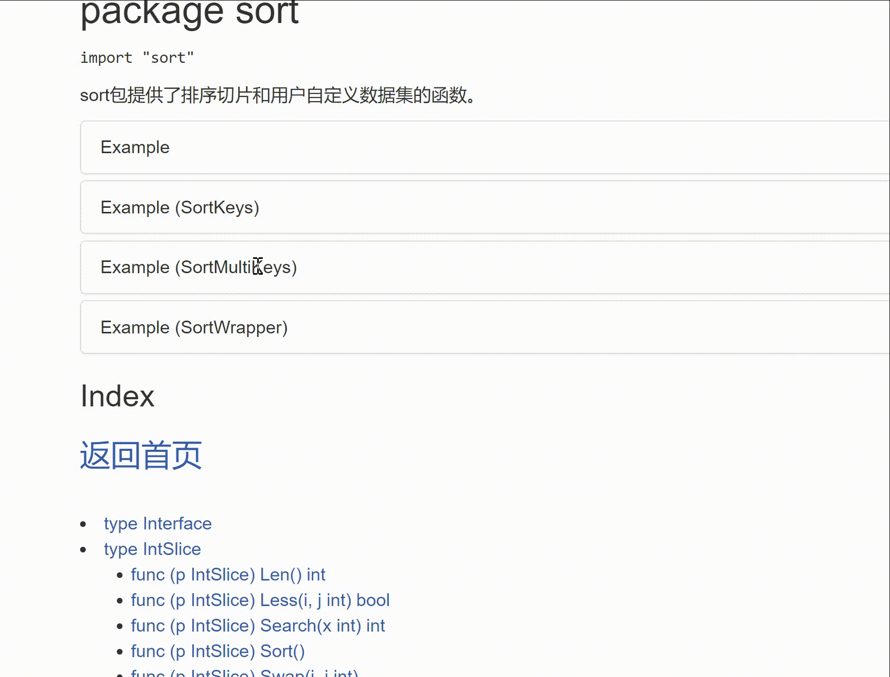
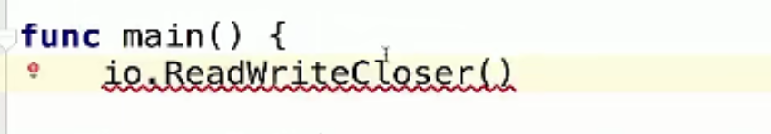

1 接口¶
1.接口的概念¶
场景：有一个项目经理要管理三个程序员开发一个软件，为了控制和管理软件，项目经理可以定义一些接口，然后由程序员具体进行实现。
接口是一组仅包含方法名、参数、返回值的未具体实现的方法的集合。
一个简单的例子：
package main
type Usber interface{ //接口和它的两个没有实现的方法
Start()
Stop()
}
type Phone struct{
}
func (p Phone) Start(){ //程序员1写的方法
fmt.Println("手机开始工作。。")
}
func (p Phone) Stop(){//程序员2写的方法
fmt.Println("手机停止工作。。")
}
type Computer struct{
}
//定义个电脑类
func (c Computer) Working(usb Usber){ //电脑的方法是调用接口
usb.Start()
usb.Stop()
}
func main(){
computer := Computer{} //电脑
phone := Phone{} //手机
computer.Working(phone) //电脑和手机工作
}
第二个例子：
type MyInterface interface{
Print() //接口里面未被实现的方法
}
func TestFunc(x MyInterface) {} //x是这个接口类型
type MyStruct struct {} //MyStruct 是个结构体->类
func (me MyStruct) Print() {} //给类绑定Print方法，也就是和接口里面的方法连接上
func main() {
var me MyStruct //实例化对象
TestFunc(me) //me这个对象传入TestFunc,me就变成了接口类型可以调用Print
}
接口定义如下：
type interfaceName interface {
// 方法列表
GetName() string
}
接口的命名喜欢使用er结尾。
第三个例子：
package main
import (
"fmt"
"go_module/infra"
)
func getRetriever() retriever{ //方法
return infra.Retriever{}
}
//Something that can "Get"，接口
type retriever interface {
Get(string) string //get方法名 （string）参数 string返回值
}
func main() {
var r retriever = getRetriever()
//r的类型是retriever这个接口，
//这个接口类型可以继承上面的getRetriever方法。
fmt.Printf("%s\n",r.Get("https://www.baidu.com"))
//main解析字符串，并且输出字符
}
定义方法的包，方法名字为Get，返回字符串，空结构体Retriever可以作为方法的接收者。
package infra
import (
"io/ioutil"
"net/http"
)
type Retriever struct {
}
func (Retriever) Get(url string) string{
resp, err := http.Get(url)
if err != nil{
panic(err)
}
defer resp.Body.Close()
bytes, _ := ioutil.ReadAll(resp.Body)
return string(bytes)
}
当我们新定义一个testing对该代码进行测试的时候，就可以实现类似继承和多态的功能。
第四个例子：使用接口来排序结构体切片。
可以看到sort包中，接口里面有三个方法需要去实现。


对切片进行排序的一般方法：
package main
func main(){
//对切片进行排序
var intSlice = []int{0,-1,10,7,90}
sort.Ints(intSlicce)
}
对结构体（对象）进行排序：
package main
type Person struct{
Name string
Age int
}
//声明一个切片里面存放多个Person结构体
type PersonSlice []Person
//实现接口的三个方法
//Len 长度
func (ps PersonSlice) Len() int{
return len(ps)
}
//Less 升序还是降序
func (ps PersonSlice) Less(i, j int) bool{
return ps[i].Age < ps[j].Age //年龄大的为真,升序排序
//return ps[i].Name < ps[j].Name
}
func (ps PersonSlice) Swap(i, j int){
ps[i], ps[j] := ps[j], ps[i]
}
func main(){
var persons PersonSlice
for i := 0; i<10 ;i++{
person := Person{
Name : fmt.Sprintf("Person_",rand.Intn(100))随机生成1个名字
Age : rand.Intn(100) //随机生成1个年龄
}
persons = append(persons,person)//添加到切片里面
}
sort.Sort(persons)
for _ , v := range persons{
fmt.Println(v)
}
}
2 接口和继承的区别¶
继承是子类继承父类的一些属性和方法，接口可以在子类的上面添加“翅膀”，并且不破坏继承关系。
可以认为，实现接口是对继承机制的补充。
type Monkey struct{
Name string
}
type BirdFly interface{ //飞翔接口
Flying()
}
func (this *Monkey) climbing{
fmt.Println(this.Name,"爬树")
}
type LittleMonkey struct{
Monkey//小猴子继承猴子的属性和方法
}
func (this *LittleMonkey) Flying(){ //小猴子可以飞翔
fmt.Println(this.Name,"飞翔")
}
func main(){
monkey := LittleMonkey{
Monkey{
Name: "Wukong",
},
}
monkey.climbing()
monkey.Flying()
}
总结:
- 继承的价值在于：解决代码的复用性和可维护性。
- 接口的价值在于：设计，设计好各种规范和方法，让其它自定义类型去实现这些方法。
- 接口比继承更加灵活，继承是满足
is-a的关系，而接口只需要满足like-a的关系。 - 接口可以在一定程度上实现代码解耦。
3 Duck Typing的概念¶
像鸭子走路，像鸭子叫（长得像鸭子），那么就是鸭子。
"duck typing" 描述事物的外部行为而非内部结构。
go属于结构化类型系统，类似于duck typing
Python中的duck typing:
def download(retriever):
return retriever.get("www.baidu.com")
retriever是一个duck typing，
通常需要注释来说明接口。
C++中的duck typing：
template <class R>
string download(const R& retriever){
return retriever.get("www.baidu.com")
一般用模板来实现，缺点是编译时才知道传入的retriever有没有get（打代码的时候不知道），仍需要注释来说明接口。
java中的类似代码：
<R extends Retriever>
String download(R r){
return r.get("www.baidu.com")
}
传入的参数必须实现Reriever接口，java没有duck typing。
go语言的duck typing:
同时需要Readable,Appendable,这个数据可以读可以写，该怎么办？
同时具有python，C++的duck typing的灵活性
又具有java的类型检查。
4 接口的定义和实现¶
接口由使用者定义
实例练习：
package main
import (
"fmt"
"go_module/retriever/mock"
"go_module/retriever/mock/real"
)
type Retriever interface {
Get(url string) string
}
func download(r Retriever) string{
return r.Get("https://www.imooc.com")
}
func main() {
var r Retriever
r = mock.Retriever{Content: "this is a fake mooc"}
r = real.Retriever{}
fmt.Println(download(r))
}
package real
import (
"net/http"
"net/http/httputil"
"time"
)
type Retriever struct {
UserAgent string
TimeOut time.Duration
}
func (r Retriever) Get(url string) string {
resp, err := http.Get(url)
if err != nil{
panic(err)
}
result, err := httputil.DumpResponse(
resp,true)
resp.Body.Close()
if err != nil{
panic(err)
}
return string(result)
}
package mock
type Retriever struct {
Content string
}
func (r Retriever) Get(url string) string {
return r.Content
}
接口的实现是隐式的，只要是实现里面的方法就可以了。
5 接口的值类型¶
注：接口一般不会用到指针
package main
import (
"fmt"
"go_module/retriever/mock"
"go_module/retriever/mock/real"
"time"
)
type Retriever interface {
Get(url string) string
}
func download(r Retriever) string{
return r.Get("https://www.baidu.com")
}
func main() {
var r Retriever
r = mock.Retriever{Content: "this is a fake url stage "}
inspect(r)
r = real.Retriever{
UserAgent: "Mozilla/5.0",
TimeOut: time.Minute,
}
inspect(r)
//realRetriever := r.(mock.Retriever)
//fmt.Println(realRetriever.Content)
if mockRetriever,ok := r.(mock.Retriever); ok{
fmt.Println(mockRetriever.Content)
}else{
fmt.Println("not a mock retriever")
}
fmt.Println(download(r))
}
func inspect(r Retriever){
switch v := r.(type) {
case mock.Retriever:
fmt.Println("Contents:",v.Content)
case *real.Retriever:
fmt.Println("UserAgent:",v.UserAgent)
}
}

- 接口变量自带指针
- 接口变量同样采用值传递，几乎不需要使用接口的指针
- 指针接收者实现只能以指针方法使用，值接收者都可以
查看接口变量
Type Assertion
Type Switch
interface{} 可以表示任何类型，比如可以把 int 改成interface{}，这样切片内可以存储任何类型的值了。
6 接口的组合¶
例如：一个文件又能读又能写，组合两个接口。
实例练习：
package main
import (
"fmt"
"go_module/retriever/mock"
"go_module/retriever/mock/real"
"time"
)
type Retriever interface {
Get(url string) string
}
type Poster interface {
Post(url string,
form map[string]string) string
}
const url = "https://www.baidu.com"
func download(r Retriever) string{
return r.Get("https://www.imooc.com")
}
func post(poster Poster){
poster.Post("https://www.baidu.com",
map[string]string{
"name" :"mouse",
"course":"golang",
})
}
type RetrieverPoster interface {
Retriever
Poster
}
//接口的组合
func session(s RetrieverPoster) string{
s.Post(url,map[string]string{
"contents": "another faked stage",
})
return s.Get(url)
}
func main() {
var r Retriever
retriever := mock.Retriever{Content: "this is a fake mooc"}
r = &retriever
inspect(r)
r = real.Retriever{
UserAgent: "Mozilla/5.0",
TimeOut: time.Minute,
}
inspect(r)
//realRetriever := r.(mock.Retriever)
//fmt.Println(realRetriever.Content)
if mockRetriever, ok := r.(*mock.Retriever); ok{
fmt.Println(mockRetriever.Content)
}else{
fmt.Println("not a mock retriever")
}
fmt.Println("Try a session")
fmt.Println(session(&retriever))
fmt.Println(download(r))
}
func inspect(r Retriever){
switch v := r.(type) {
case *mock.Retriever:
fmt.Println("Contents:",v.Content)
case *real.Retriever:
fmt.Println("UserAgent:",v.UserAgent)
}
}
应变成指针接收才能改变contents内容：
package mock
type Retriever struct {
Content string
}
func (r *Retriever) Post(url string, form map[string]string) string {
r.Content = form["contents"]
return "ok"
}
func (r *Retriever) Get(url string) string {
return r.Content
}
标准库中的写法，例子：


¶
更新: 2022-02-17 16:20:03
原文: https://www.yuque.com/xiaoshan_wgo/codingnotes/kybspv